A major theme in graph-theoretic approaches is comparing nodes by different centrality measures. There are hundreds of centrality measures, some of which measure similar properties. Here are some selected measures we use that have biological relevance. By default interactive network objects will compute degree, eigen, betweenness, and stress centrality. Below are all available centrality measures in the package.
Source: https://www.centiserver.org
Jalili M, Salehzadeh-Yazdi A, Asgari Y, Arab SS, Yaghmaie M, Ghavamzadeh A, Alimoghaddam K. (2015) CentiServer: A Comprehensive Resource, Web-Based Application and R Package for Centrality Analysis. PLoS ONE 10(11): e0143111. DOI: 10.1371/journal.pone.0143111
yeast.networks <- readRDS(file.path(system.file("extdata", package="bieulergy"), "yeast-networks.rds"))
names(yeast.networks)[1] "Yeast_1" "Yeast_2" "Yeast_3"
# Working with single network
network <- yeast.networks$Yeast_1
# Working with multiple network
networks <- yeast.networksOne of the first things you might do for a network is check to see which centrality measures are responsible for the variance among nodes.
network.pca.pltvar(network)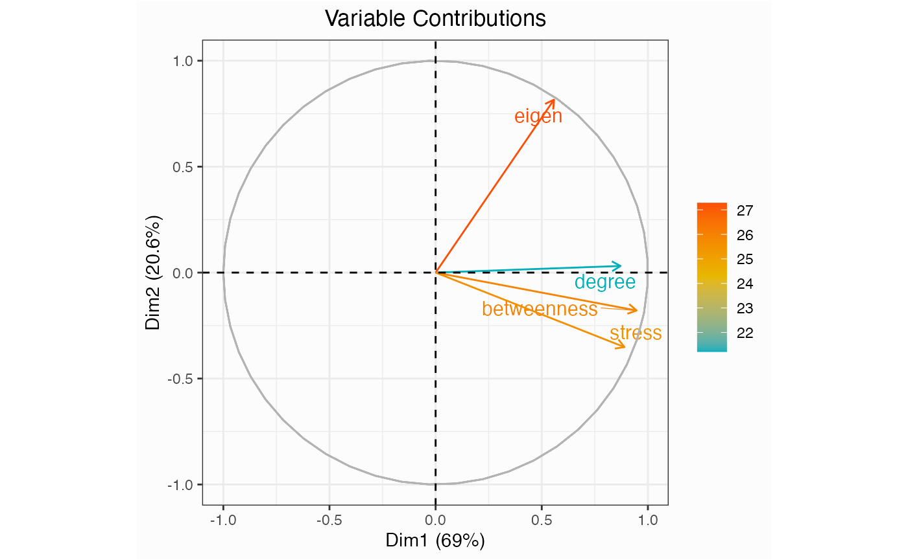
network.pca.contri(network)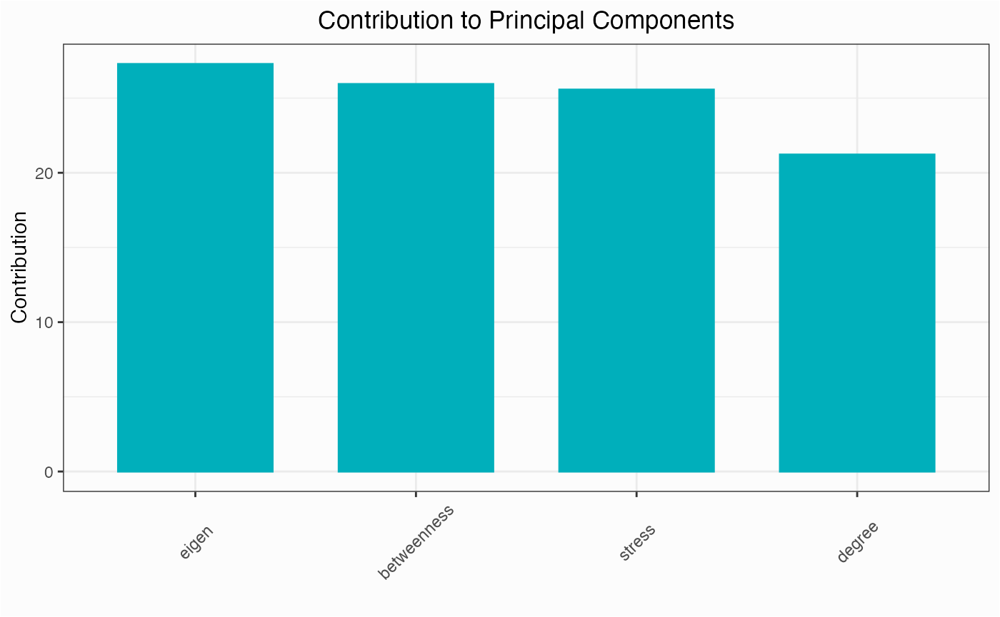
network.pca.varexp(network)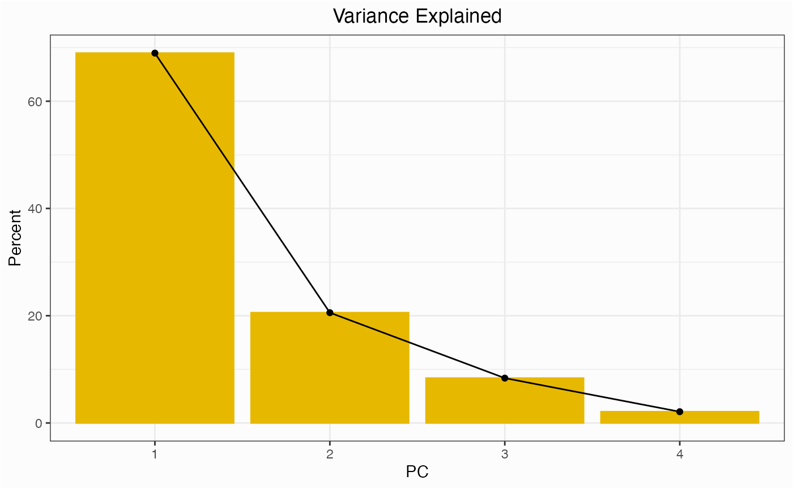
network.pca.hclust(network)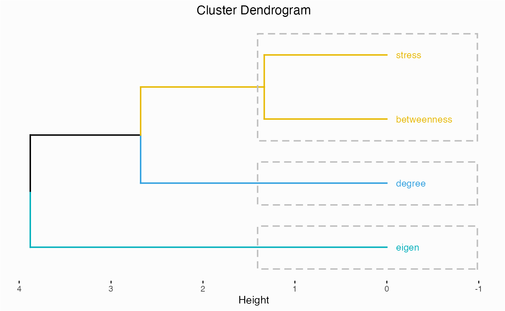
networks.cdistr(networks, metric="degree")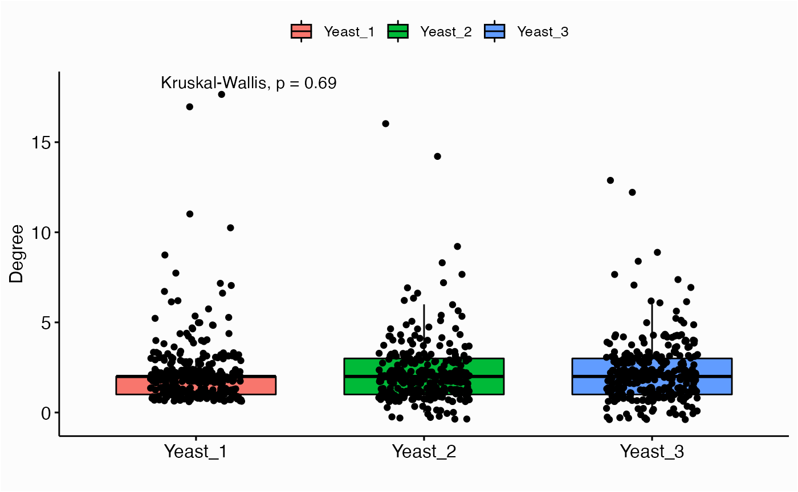
networks.cdistr(networks, metric="eigen", plot="density")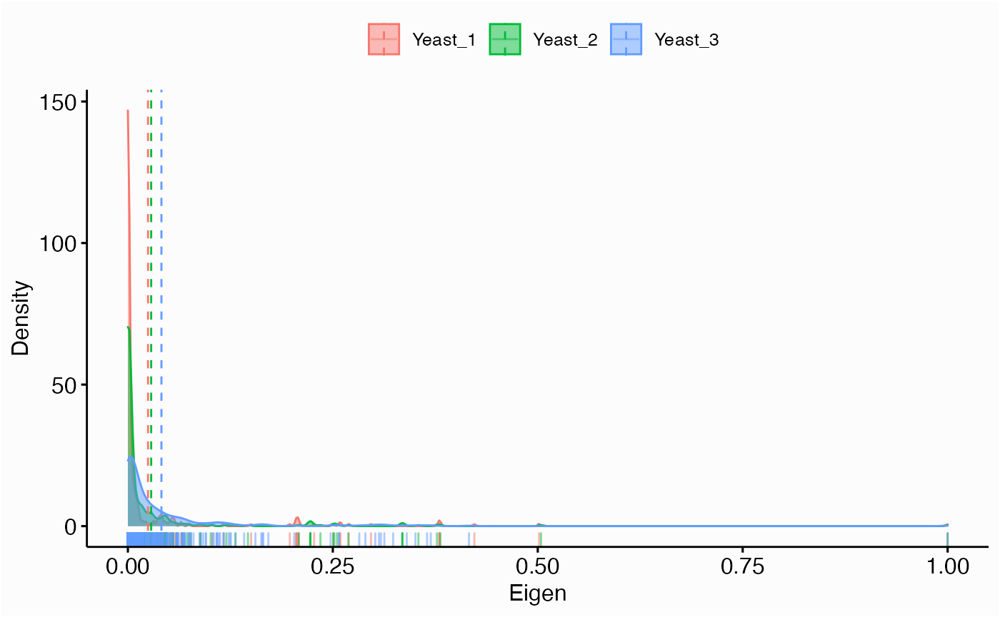
networks.cdistr(networks, metric="eigen", plot="ecdf")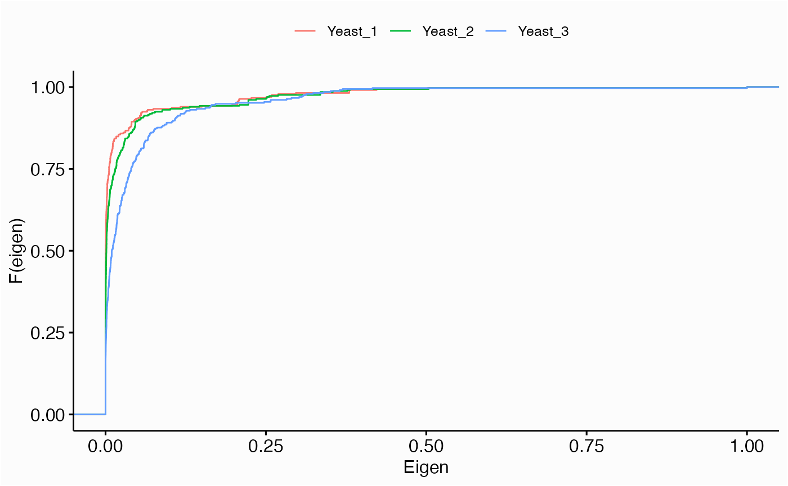
library(hypeR)
genesets <- enrichr_download(genesets="KEGG_2019", db="YeastEnrichr")
geneset <- genesets$`MAPK signaling pathway`
head(geneset)[1] "RGA1" "RGA2" "STE50" "MSS11" "MID2" "DIG1"
yeast.1 <- yeast.networks$Yeast_1
network.kstest(yeast.1, metric="eigen", geneset=geneset)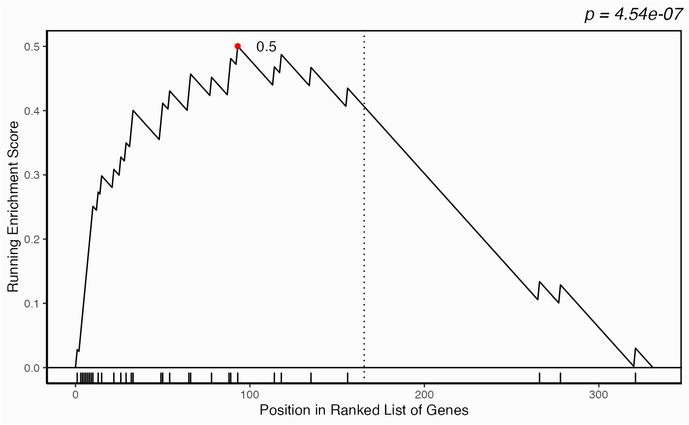
p <- lapply(yeast.networks, function(x) network.kstest(x, metric="eigen", geneset=geneset))
p <- mapply(function(px, label) {
px+ggplot2::labs(subtitle=label)
}, p, names(yeast.networks), SIMPLIFY=FALSE)
ggpubr::ggarrange(plotlist=p, ncol=1, nrow=3)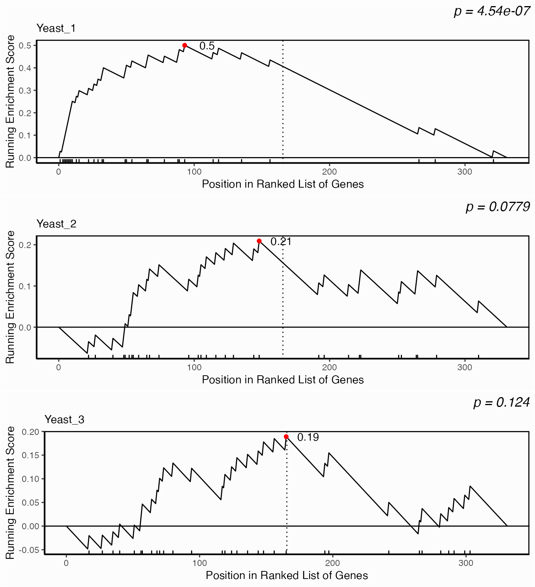
ggwrs(100, p=5)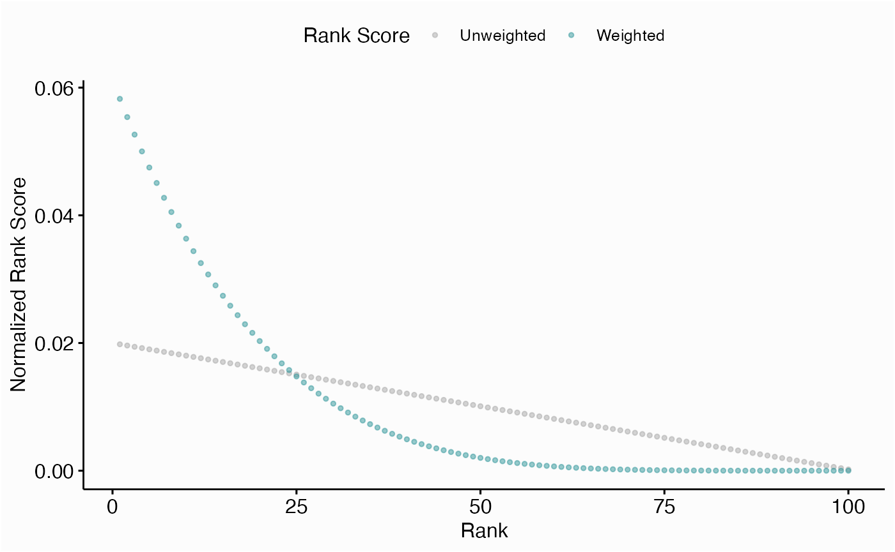
networks.diffc(yeast.networks, metric="eigen", top=25, p=5)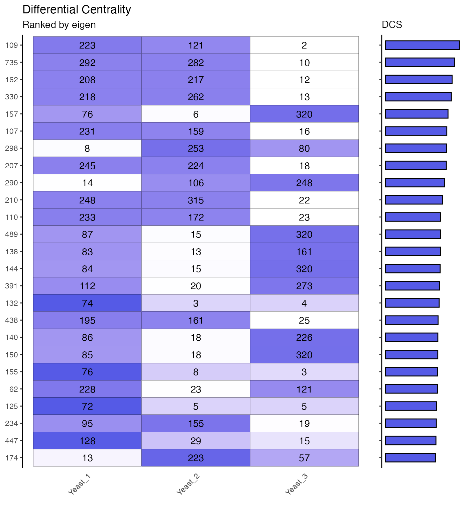
yeast.3 <- yeast.networks$Yeast_3
yeast.3$get.symbols("109")[1] "LSM8"